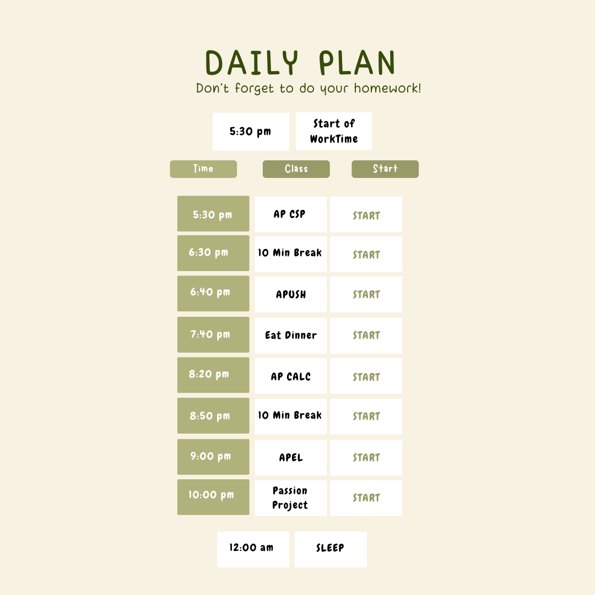

In our project, we intend to make scheduling for homework and study habits easier, by enabling students with the ability to create a plan to disperse workload, in the hopes that it would break procrastination habits. Daniel Choi, Rayyan Darugar, Aidan Lau, Nathaniel Obodovski all collaborated to bring you a program focused on taking input and making classes to keep your personalized schedule in an accessable database of which you can alter and adjust to your needs. We've taken concepts that we've learned about all throughout our time spent in our AP Computer Science Principles course and used what we've learned about teamwork and divide + conquering workload to bring you our passion project Study Buddy.
